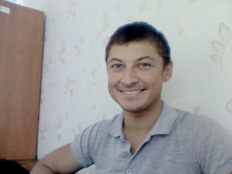

Denis Laptev, Junior Researcher.

B. Verkin Institute for Low
Temperature Physics & Engineering of Ukrainian Academy of Sciences,
47, Nauky Ave.,
61103 Kharkov, Ukraine
+38 (057) 341-09-39
Graduated from Kharkov State University in 2008.
The same year started work at ILTPE.
PhD Phys & Math, ILTPE, 2015.
Main research field is:
Nonlinear effects in solid state physics and optics. The investigation of dynamics and interaction of nonlinear periodic and localized waves (solitons) in the low-dimensional lattice systems. Molecular dynamics and DFT computation of the lattice systems and nanoparticles. Investigation of hydrogen energetics.
Professional societies and organizations:
- The Council of Young Scientists ILTPE NAS of Ukraine
- The Optical Society of America (OSA)
- The International Society of Optics and Photonics (SPIE)
Main publications:
- Assessment of discrete breathers in the metallic hydrides. V.I. Dubinko, D.V. Laptev, D. Terentyev, S.V. Dmitriev et. al. Computational Materials Science. 158 (2019) 389-397.
- The superlattices of discrete breathers in the 1D crystal model. D.V. Laptev Letters on materials. 6 (1) (2016) 34-38.
- Chemical and nuclear catalysis driven by localized anharmonic vibrations. V.I. Dubinko, D.V. Laptev Letters on materials 6 (1) (2016) 16-21.
- Laptev D.V. Nonlinear periodic waves solutions of the nonlinear self-dual network equations / D.V. Laptev M.M. Bogdan // J. Math. Phys. – 2014. – V.55, № 4. – 042903-1 – 042903-15.
- Laptev D.V. Nonlinear superposition formula for the Hirota lattice equation / D.V. Laptev // J. Phys. Soc. J. – 2013. – V.82. – P.014005-1 – 014005-3.
- Laptev D.V. Classical Energy Spectrum of the Hirota Nonlinear Oscillator / D.V. Laptev // J. Phys. Soc. J. – 2013. – V.82, № 4. – 044005-1– 044005-7.
- Богдан M.M. Квазікласичні спектри солітонв континуального та дискретного модифікованих рівнянь Кортевега – де Фріза / М.М. Богдан, Д.В. Лаптєв // Науковий вісник Ужгородського університету. Серія Фізика. – 2009. – Вип.24. – C. 100–107.